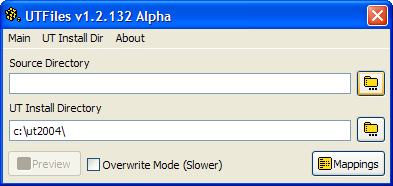
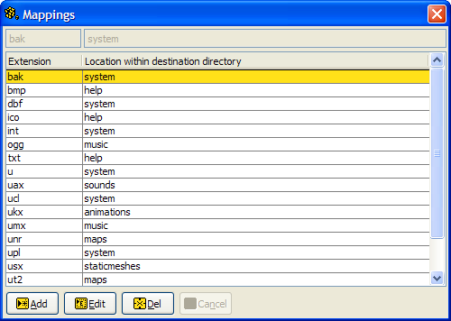
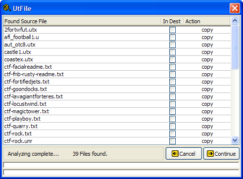
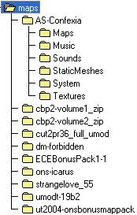
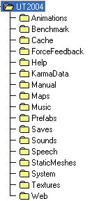

This program is used to add new game files to a currently installed version of Unreal Tournament. It copies files from the source directory into the appropriate directory within the game install directory. It searches a specified folder and it's subfolders for game files and then uses a mappings table to determine where the files needs to go in the game directory. For example, files with the .uax extension need to be placed in the sounds folder. The mappings can be modified to include any file extensions for any version of UT. The current version of UTFile comes with extension mappings for GOTY and 2004 versions. (The program can also be used with other files not associated with Unreal Tournament.)
This is the main screen of the program. You must choose a source directory before you can start the copy process. Once you've selected the source directory that contains the new files, make sure you have the correct UT install directory. By default you will see the UT 2004 directory. Use the mappings button to edit mappings. (More on mappings below...) When you've made your selections, click the [Preview] button to start the copy process. The program will analize the source directory and give you a "preview" of what the copy process will do. UTFile will not copy the files, but give you a report of a simulated copy. (See the preview screen section.) This is useful to make sure that files will be copied to the correct place, and allows you to see files that would be replaced. There are files, that you may not want replaced, especially in the system directory. Use the overwrite checkbox to overwrite files if it is necessary.

Use this screen to edit file mappings. First select a mapping by clicking on it. Then use the buttons at the bottom of the screen to carry out an action. The program will search the source directory for all extensions listed on this screen. If you do not want an extension to be processed do not list it here. Future versions of the program may have the ability to save mapping configurations. You must also provide a directory for the extension. UTFile will look for that directory in the destination directory. If it does not find it will not copy the file there and give you an error. Make sure all directories listed under the directory column exist int he destination directory before proceding with the copy. Duplicate extensions are not allowed.

This screen is used to take a look at what the program will do when it attempts to copy the files. After you are satisfied with the results of this screen, click continue to copy the files.

| Source | Game Directory | |
|  |  |
This is a self-extracting archive. It will extract to the directory it resides in a test UT2k4 game directory. Use this as the "UT Install Directory" in the program to test the copy process. This file is located in the program install directory: "c:\program files\utfile\".
This program is copyright © 2006 Deciacco.com. You are authorised to use the program for your own private use but you may not sell the program or remove any copyright information from it.
You use the program at your own risk - the author accepts no responsibility for any problems or losses which might arise from its use, and support for the software is not guaranteed.
deciacco.com
contact@deciacco.com
Thanks to all the wonderful people in the Foxpro community that took a few minutes out of their day to answer questions.
Microsoft and Visual FoxPro are either registered trademarks or trademarks of Microsoft Corporation in the United States and/or other countries.
This program and deciacco.com are not affiliated with or endorsed by Microsoft in any way.
This program is in no way affiliated with Unreal Tournament, Epic Games, or Atari. Unreal ® Tournament 2004 © 2004 Epic Games, Inc. Unreal is a registered trademark of Epic Games, Inc. ALL RIGHTS RESERVED. All other trademarks are the property of their respective owners.